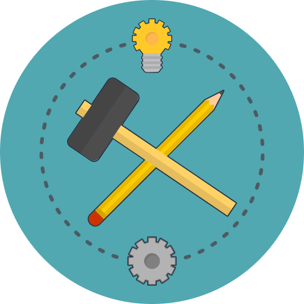

AxaFrance WebEngine Framework
A Test Automation Framework (TAF) is a set of guidelines and libraries for creating and designing test cases. It is a conceptual part of automated testing that provides common functionalities and best practices, helping Test Automation Engineers to build reliable, maintainable and well-structured Test Automation Solutions (TAS).
AxaFrance WebEngine Framework makes it easy to build highly effective test automation solutions for Web, Mobile Web and Mobile App testing.
Built by the Test Guild of AXA France, available in .NET and Java, and used across a dozen test automation projects within AXA France. We decided to open-source this framework to share our knowledge on Test Automation with the community and improve software quality together 😉.
Why WebEngine Framework?
WebEngine resolves common problems that arise in test automation projects, embedding best practices directly into the framework so every team benefits automatically.
- No more driver management headaches - BrowserFactory detects your installed browser version and downloads the correct WebDriver automatically.
- Resilient element identification - WebElementDescription lets you combine multiple locators (Id, Name, CSS, XPath, custom HTML attributes).
- Built-in synchronization - Every element action has an automatic retry loop. StaleElementReferenceException and timing issues are handled by the framework, not by Thread.Sleep() in your code.
- Page Object Model by design - PageModel cleanly separates element descriptions from test logic.
- Secure credential handling - SetSecure decrypts and types passwords on the fly.
- Test data externalization - Add new test cases and switch environments without changing code.
- AI-powered test authoring - The built-in MCP server exposes live browser control to GitHub Copilot and other AI assistants.
- Cross-platform from one API - The same BrowserFactory works for Windows, macOS, Android and iOS.
- Graphical test reports - Report Viewer provides synthetic overview and step-level detail.
- Open Source - Free to use. Contributions welcome!
For a detailed explanation of every built-in practice, see Best Practices in WebEngine Framework.
Getting started.
- Introduction: Explains common concepts of the framework.
- API Reference: Explains every class, method and property.
- Tutorials: Follow some step by step tutorial to build first test automation solution using by differents approaches.
 |
 |
||
|---|---|---|---|
| Introduction | .NET API Reference |
JAVA API Reference |
Tutorials & Examples |
Show case
Use the latest version
The Framework is distributed via Package Management: NuGet for .NET version and Maven for JAVA Version.
Contact us
Feel free to reach us if you want to adopt the Framework, report Bugs or have good ideas to contribute on it.
Repository of .NET Project and shared components:
- https://github.com/AxaFrance/webengine-dotnet
- Main contributor: Huaxing YUAN


Repository Java Project:
- https://github.com/AxaFrance/webengine-java
- Main contributor: Joseph ARUL ,
Jean-Prince DOTOU-SEGLA ,
- Main contributor: Joseph ARUL